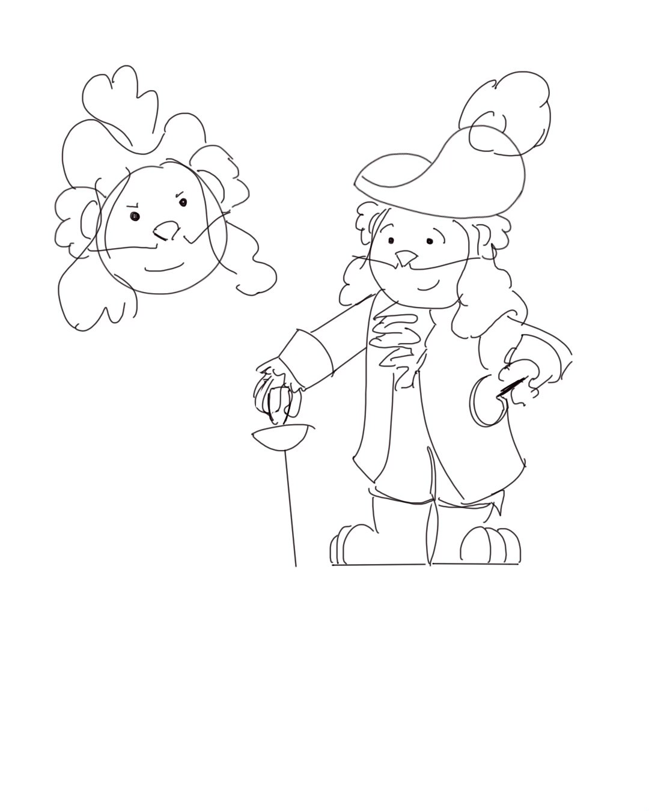

Project Log
A Sign of Life
June 2024 - present
In the summer of 2024, I met with my friend, Kayla McGuinn, for lunch like we always do after each semester. We caught up, and she showed me some of the music she had been working on. From there, we decided to combine our efforts to create an animated short from her music. This was something we'd talked about doing since high school, but neither of us felt comfortable at our skill level at that time. Now with some more experience under our belts, we were ready for real collaborations.
Since the music was already composed, all that was left was the animation of course. Simple, right? Nope. Animation takes quite a long time, and since I am both a full-time student and the sole animator on this project, it was bound to take some time. The main viewable piece I have thus far is the animatic. I have many of the key scenes animated and colored, but I still have a good many to go. Here is what I've got done during this process so far.
Storyboards
Backgrounds

Character/Creature Designs
Annabel Lee
Aug. 2024 - present
As the President of Georgia Tech's Animation Club, I have always wanted the club to create some sort of short film together to mimic the semester projects of animation students in art schools. As a result, I once again partnered with my composer friend, Kayla McGuinn, to create a piece for us to animate to.
Since I have also been working on A Sign of Life during this time, I mainly act in a director role to coordinate the artists together. We unfortunately ran into a production issue during October. Initially, we had a lot of interest from various 3D modelers and animators; however, after a while, only a few of the 3D animators wanted to participate, causing us to scramble to find people to model some of the backgrounds. Because of this, I am employing my 3D modeling skills to assist the production and get things back on track.
3D Models
Interactive Keychains for Esports Events
Aug. 2023 - May 2024
My experience in my Vertically Integrated Project (V.I.P.) was filled with a variety of opportunities that connected me with a lot of wonderful people. The V.I.P. was called, "The Future of Esports" and its mission was to create a smoother esports experience for both players and viewers. The project was split into 4 different teams, each focused on different areas. My team was the "Fan Experience" team, and our goal was to elevate the fan experience with interactive keychains, allowing attendees to collect exclusive digital tokens and animations.
For the first semester, my goal was strictly to create an animation to be used for testing. Our original partner, Brawlhalla, was excited about the potential of the research and so, I animated with one of their characters: Bödvar. The final animation was an example of what might be collected by an attendee based on their own top-played character in the game.
In the second and final semester, I not only created 2 more rough animations, but I also became a key part of the programming part of the team. This was my first time using a backend database, in this case MongoDB, and it was very daunting at first. Luckily, I had an amazing team lead that guided me through the process. In the end, I programmed multiple endpoints for testing the keychains and drew out multiple test animations.
OpenGL Dragon Final
Jan. 2024 - May 2024

Creating this dragon image using OpenGL and C++ was a very rewarding experience, allowing me to dive deeper into computer graphics and technical details behind it. This was a group project with two other members. I was in charge of the dragon itself while my teammates were in charge of the background and terrain.
The dragon is a model I found on the website, Free3D, and was made by andry94. My goal with the model was to code and implement a custom fragment shader to give an opacity to the model as well as a crystal texture. In the end, I was successful implementing both as well as posing the dragon in Blender to better fit the environment.
You can view the repository here.
Dungeon Crawler
Aug. 2023 - Dec. 2023
I led this group project to complete a dungeon crawler video game by the end of the semester using Android Studio. I coordinated with 5 other people to complete this project in an efficient manner. We maintained a Trello to keep our schedule organized and consistently communicated. We utlized an agile developement strategy to work effectively.
I completed many portions of the project, such as the player movement; however, the aspect I am the most proud of is the code organization. As soon as we learned it in class at the end of the semester, I completely reorganized our code to make it more readable and manageable. I used many coding design patterns to implement this reorgnization, such as Strategy and Factory patterns.
You can view the repository here.
App for an Imagined World
Oct. 2023 - Nov. 2023
This was a group project for our final in Principles of Interaction design. For the project, we had to first design a fictional world and then create an app that would exist in this world.
We first had to brainstorm ideas in Figma. We bounced back around 100 different concepts until we finally settled on a world where animals can talk. This quickly became a very daunting task when we presented it, but we wanted to challenge ourselves. As a result, we chose to create an app designed for veterinarians to use to communicate with animals. In the end, we created a working prototype in Figma and presented it to our class.
Childhood Cancer Society (CCS) Internship
Jan. 2023 - Aug. 2023
In spring of 2023, I was on the lookout for internship opportunities for the summer. I have always loved animation and had been teaching myself 2D animation ever since I was in the 9th grade, so when I saw the opportunity for an animation internship for the Childhood Cancer Society (CCS), I knew it was meant to be.
Interning for CCS was an incredibly rewarding experience from both a skill development standpoint and a moral standpoint. I was able to go through a full development cycle for an animated comic with a team of around 30 other artists and animators, creating numerous opportunities to receive feedback from industry professionals, but I also new that my work would be going towards a fantastic cause. Helping children and families going through such a difficult experience was truly fantastic. Even though the artists didn't interact with the children directly, we always were excited to see the happiness our hard work brought these children.
In terms of what I did for CCS, I created 7 different animations for a multitude of projects across my 7 month internship. The video to the left depicts the different animations specifically as well as a link to the original post that is posted on CCS's YouTube. I made it a personal goal to one-up myself every single time I was assigned a new project. I went from a simple walk cycle in my audition video to a 360-degree camera shot and a 4-legged walk cycle. The shear amount of knowledge I learned from our weekly Show & Tell's was more than I could have ever hoped for.
During this internship, I also found myself learning new areas of production that I hadn't previously delved to deeply into. For example, I was able to design costumes for the organization mascot, Adventure Ted, as well as design entirely new characters, such as Mayor Flowers. I even did some storyboards, creature design, and background art, all of which I was able to receive excellent feedback on from all the other artists and animators. Overall, my experience at CCS was amazing. I learned so much and met so many outstanding people. I wish them all the best in their future endeavors!
Storyboards


Backgrounds

Character/Creature/Machine Designs



Birds at Work
June 2022
During the summer of 2022, I watched a video by Toniko Pantoja. He talked about how he completed a project in one week and how rewarding it was. This was a very inspiring video for me, so I soon decided to animate my own project, but instead of one week, I would give myself one month.
For this animated short, I decided to pull from my list of ideas. I picked a very recent idea I had come up with while I was at the beach. I remember I was sitting outside with my family when suddenly, we saw a couple birds swooping down and landing on tables, trying to steal french fries off of a family's plate. I thought this would be a very cute idea for a short!
I immediately started storyboarding in a little notebook I had and sketching out character designs. Something I decided to skip in the process was creating an animatic. This is something I would later come to regret.
After the animation and coloring was complete, I used Adobe After Effects to apply lighting through a technique I also learned from Toniko Pantoja. During the editing process, however, I realized that the pacing was slightly off during the montage. This is what showed me how important it is to produce an animatic before starting production. I could have solved those timing issues before they became a problem. It was a mistake worth making though, so now, I know better.
This is a project I am incredibly proud of to this day. I accomplished my goal of finishing it in one month and proved to myself that I could complete an animated short from start to finish. It gave me so much confidence in my ability to continuously improve my animation skills that I have carried with me to this day.
Chasing Daybreak
April 2022 - May 2022
A = ZX = BArrow KeysBackspace = Pause
This might be one of the most daunting tasks I have ever undertaken.
When I was a freshman at Georgia Tech, I was... overly ambitious. While it was great to be confident in my abilities, everyone has their limits, and everyone in my major warned me about what I was doing. There is a general rule in my major and at Georgia Tech as a whole: don't take a computer science class, math class, and lab science in the same semester. Naturally, I did all three. Not just that, they were all worth 4 credit hours, plus I was taking an additional class with them. They were a nightmare of work together, but nothing was as stressful as that last month. For my final in my CS class, Media Device Architecture, I had to create a video game from scratch in one month.
On it's own, this is a daunting task, but alongside a lab science and a 4 hour Linear Algebra class, I was in trouble. I knew the project needed to be as good as I could make it though because we would lose points for any bug they found in our game. Luckily, I already had an idea of what I wanted to do.
I described it as an extreme version of the Google Dinosaur game where there are many more obstacles and mechanics. We had many requirements, such as a power-up, multiple stages, a cheat code, and many more. I managed to implement all of these within the month and even presented my game early to receive extra points. There were no bugs found in the grading either. One thing I'm still very proud of is that I incorporated a cutscene at the beginning of my game using the Time class. The professor told me that no one had ever done that before for any of the past games presented in this class. I was very proud to be the first to incorporate that milestone.
I am incredibly proud of how this game turned out, especially with all the added stress from other classes. You can play the game above by pressing Run Anyway. Enjoy!